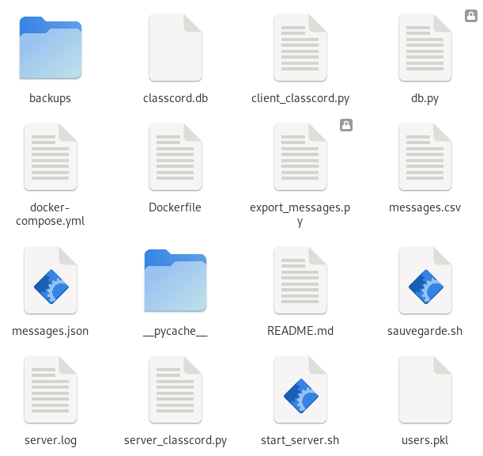
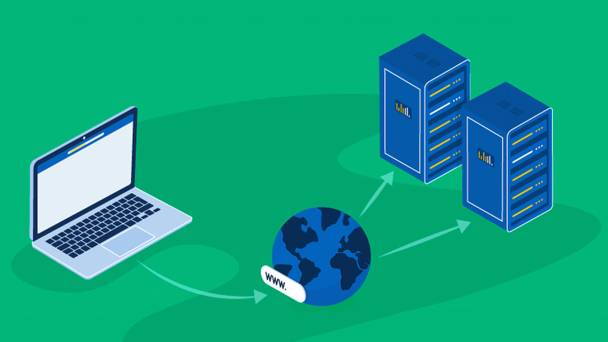
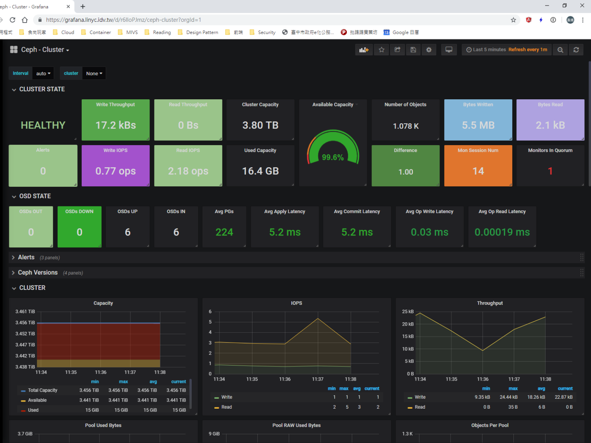
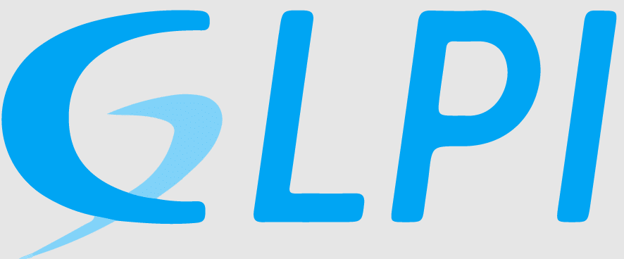
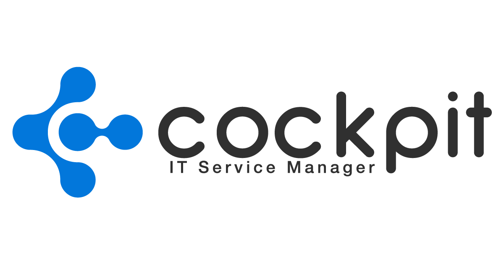

Windows Server
Déploiement d’une infrastructure Windows Server complète : AD DS, DNS, DHCP, GPO, serveur de fichiers et automatisations PowerShell.
Mise en place complète d'un domaine Active Directory, configuration des rôles, création d’OU, gestion des stratégies GPO.

ClassCord Server
Serveur de tchat multi-clients en Python, déployé, sécurisé et supervisé sous Linux, avec accès réseau pour les clients SLAM.
ClassCord est un serveur de tchat multi-clients développé en Python, utilisé par les étudiants SLAM (développeurs) pour tester leurs clients Java.
Mon rôle en tant qu’étudiant SISR était de déployer le serveur Python et le rendre accessible sur le réseau pour les clients SLAM.

Serveur DHCP/DNS
Hébergement Apache, SSH, SFTP.
Configuration d’un serveur Debian complet : DHCP, DNS bind9, hébergement web Apache, sécurité SSH et SFTP.

Monitoring
Mini app de gestion de produits.
Mise en place d’un environnement complet de supervision avec InfluxDB, Grafana et un exporteur métrique Python.

GLPI
Fail2ban, clés RSA, durcissement SSH.
Installation GLPI complète + sécurisation avancée (fail2ban, clés RSA, durcissement SSH, droits).

Gestion utilisateurs et transfert fichiers
Création VLAN, trunking, Cisco.
Projet réseau complet : VLAN, trunk, configuration SSH, création d’utilisateurs et segmentation réseau.
CinéZone
Portail local de consultation de films utilisant l’API TMDB, avec recherche, filtres et gestion des favoris.
CinéZone est un portail web local permettant de consulter un catalogue de films en utilisant l’API TMDB.
Le site, accessible uniquement sur un réseau local, propose une interface moderne et responsive pour rechercher, filtrer et afficher des informations détaillées sur les films.
Les utilisateurs peuvent également gérer une liste de favoris grâce au localStorage.

NutriFit
Assistant nutritionnel local utilisant l’API Open Food Facts avec recommandations sportives et historique personnalisé.
NutriFit est une application web locale destinée à être utilisée sur une borne ou un poste fixe dans une salle de sport.
Elle permet aux utilisateurs de rechercher consulter obtenir des recommandations personnalisées selon leur profil sportif.